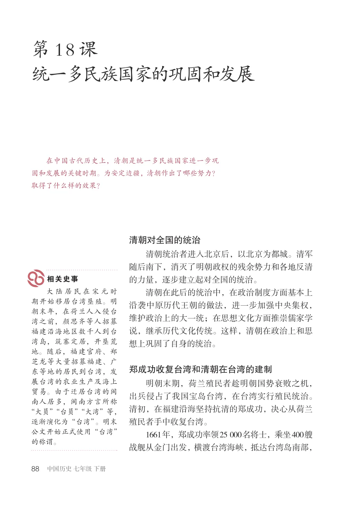
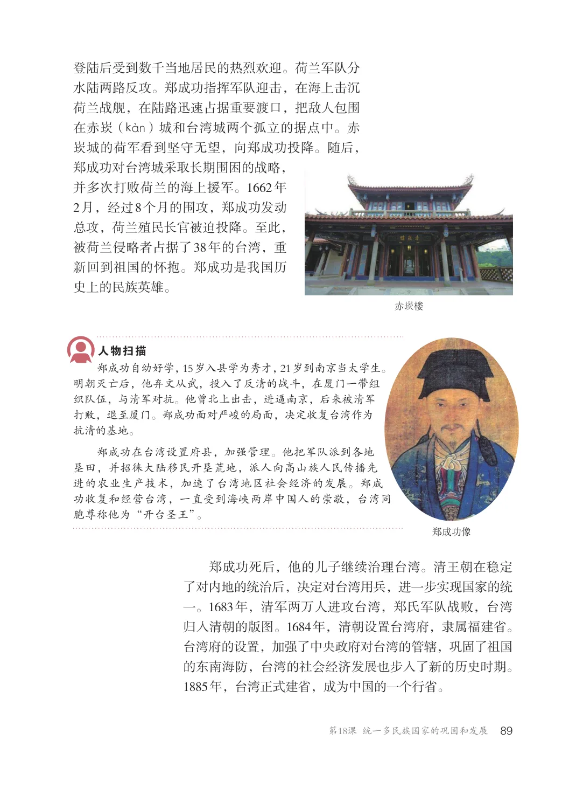
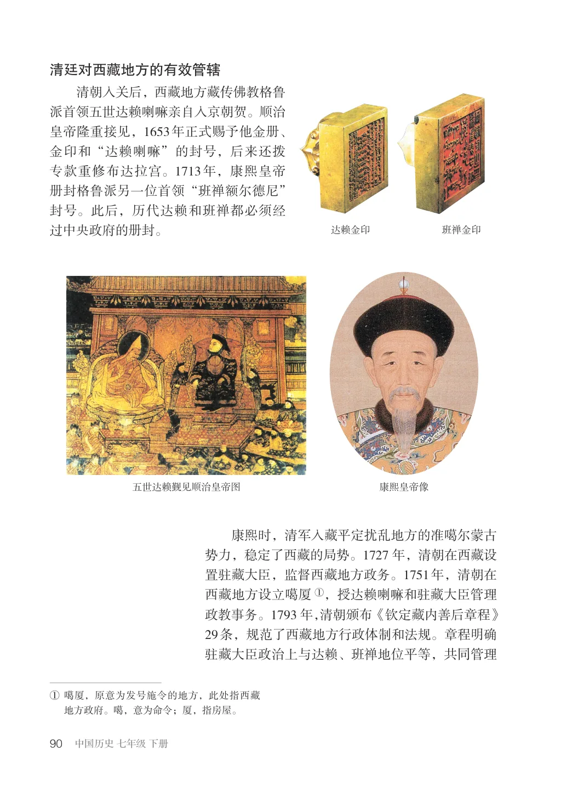
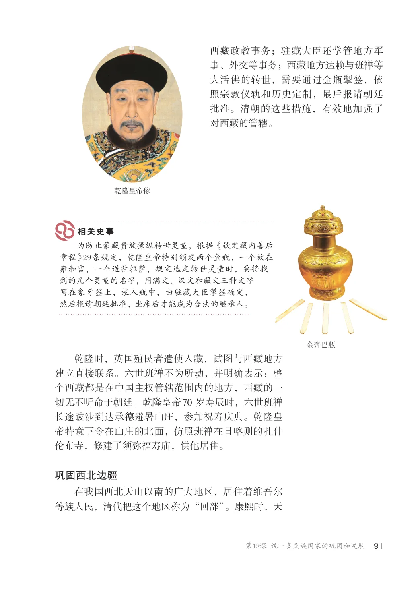
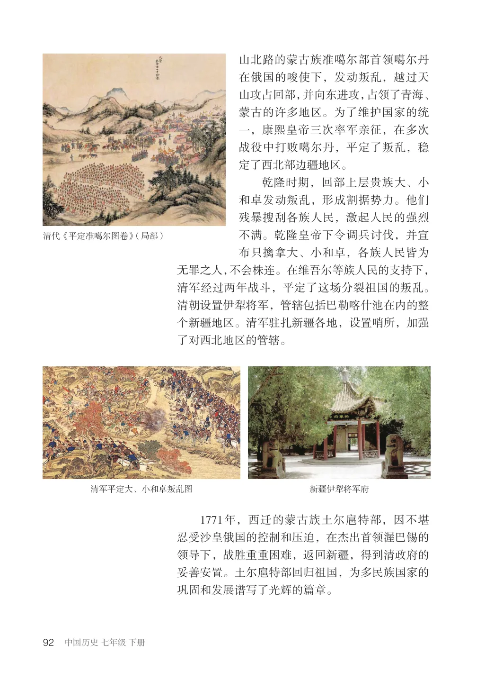
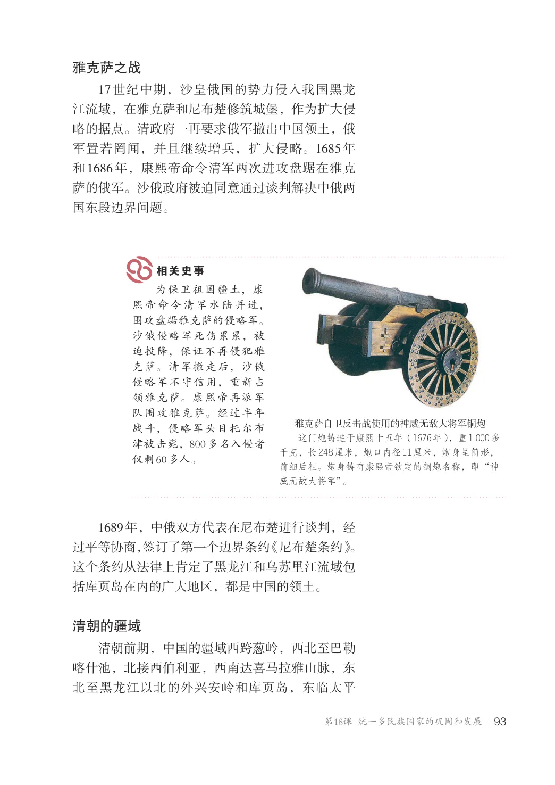
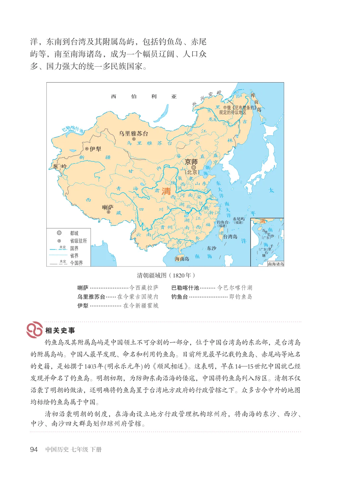
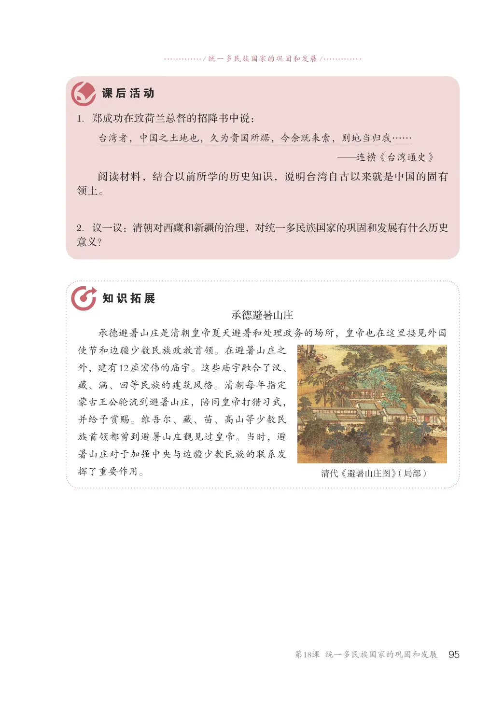

第3单元 · 教材第 88–95 页
第18课 统一多民族国家的巩固和发展
文字版依据教材 PDF 文本层整理；复杂地图、图表及版面关系请以右侧教材原页为准。
在中国古代历史上，清朝是统一多民族国家进一步巩固和发展的关键时期。为安定边疆，清朝作出了哪些努力？取得了什么样的效果？
清朝对全国的统治
清朝统治者进入北京后，以北京为都城。清军随后南下，消灭了明朝政权的残余势力和各地反清的力量，逐步建立起对全国的统治。清朝在此后的统治中，在政治制度方面基本上沿袭中原历代王朝的做法，进一步加强中央集权，维护政治上的大一统；在思想文化方面推崇儒家学说，继承历代文化传统。这样，清朝在政治上和思想上巩固了自身的统治。
大陆居民在宋元时期开始移居台湾垦殖。明朝末年，在荷兰人入侵台湾之前，颜思齐等人招募福建沿海地区数千人到台湾岛，筑寨定居，开垦荒地。随后，福建官府、郑芝龙等大量招募福建、广东等地的居民到台湾，发展台湾的农业生产及海上贸易。由于迁居台湾的闽南人居多，闽南方言所称“大员”“台员”“大湾”等，逐渐演化为“台湾”。明末公文开始正式使用“台湾”的称谓。
郑成功收复台湾和清朝在台湾的建制
明朝末期，荷兰殖民者趁明朝国势衰败之机，出兵侵占了我国宝岛台湾，在台湾实行殖民统治。清初，在福建沿海坚持抗清的郑成功，决心从荷兰殖民者手中收复台湾。1661年，郑成功率领25000名将士，乘坐400艘战舰从金门出发，横渡台湾海峡，抵达台湾岛南部，

登陆后受到数千当地居民的热烈欢迎。荷兰军队分水陆两路反攻。郑成功指挥军队迎击，在海上击沉荷兰战舰，在陆路迅速占据重要渡口，把敌人包围在赤崁（kSn）城和台湾城两个孤立的据点中。赤崁城的荷军看到坚守无望，向郑成功投降。随后，郑成功对台湾城采取长期围困的战略，并多次打败荷兰的海上援军。1662年2月，经过8个月的围攻，郑成功发动总攻，荷兰殖民长官被迫投降。至此，被荷兰侵略者占据了38年的台湾，重新回到祖国的怀抱。郑成功是我国历史上的民族英雄。
郑成功自幼好学，15岁入县学为秀才，21岁到南京当太学生。明朝灭亡后，他弃文从武，投入了反清的战斗，在厦门一带组织队伍，与清军对抗。他曾北上出击，进逼南京，后来被清军打败，退至厦门。郑成功面对严峻的局面，决定收复台湾作为抗清的基地。郑成功在台湾设置府县，加强管理。他把军队派到各地垦田，并招徕大陆移民开垦荒地，派人向高山族人民传播先进的农业生产技术，加速了台湾地区社会经济的发展。郑成功收复和经营台湾，一直受到海峡两岸中国人的崇敬，台湾同胞尊称他为“开台圣王”。
郑成功像
郑成功死后，他的儿子继续治理台湾。清王朝在稳定了对内地的统治后，决定对台湾用兵，进一步实现国家的统一。1683年，清军两万人进攻台湾，郑氏军队战败，台湾归入清朝的版图。1684年，清朝设置台湾府，隶属福建省。台湾府的设置，加强了中央政府对台湾的管辖，巩固了祖国的东南海防，台湾的社会经济发展也步入了新的历史时期。1885年，台湾正式建省，成为中国的一个行省。

清廷对西藏地方的有效管辖
清朝入关后，西藏地方藏传佛教格鲁派首领五世达赖喇嘛亲自入京朝贺。顺治皇帝隆重接见，1653年正式赐予他金册、金印和“达赖喇嘛”的封号，后来还拨专款重修布达拉宫。1713年，康熙皇帝册封格鲁派另一位首领“班禅额尔德尼”封号。此后，历代达赖和班禅都必须经过中央政府的册封。达赖金印班禅金印
五世达赖觐见顺治皇帝图康熙皇帝像
康熙时，清军入藏平定扰乱地方的准噶尔蒙古势力，稳定了西藏的局势。1727年，清朝在西藏设置驻藏大臣，监督西藏地方政务。1751年，清朝在西藏地方设立噶厦①，授达赖喇嘛和驻藏大臣管理政教事务。1793年，清朝颁布《钦定藏内善后章程》29条，规范了西藏地方行政体制和法规。章程明确驻藏大臣政治上与达赖、班禅地位平等，共同管理
①噶厦，原意为发号施令的地方，此处指西藏
地方政府。噶，意为命令；厦，指房屋。

西藏政教事务；驻藏大臣还掌管地方军事、外交等事务；西藏地方达赖与班禅等大活佛的转世，需要通过金瓶掣签，依照宗教仪轨和历史定制，最后报请朝廷批准。清朝的这些措施，有效地加强了对西藏的管辖。
乾隆皇帝像
为防止蒙藏贵族操纵转世灵童，根据《钦定藏内善后章程》29条规定，乾隆皇帝特别颁发两个金瓶，一个放在雍和宫，一个送往拉萨，规定选定转世灵童时，要将找到的几个灵童的名字，用满文、汉文和藏文三种文字写在象牙签上，装入瓶中，由驻藏大臣掣签确定，然后报请朝廷批准，坐床后才能成为合法的继承人。
金奔巴瓶
乾隆时，英国殖民者遣使入藏，试图与西藏地方建立直接联系。六世班禅不为所动，并明确表示：整个西藏都是在中国主权管辖范围内的地方，西藏的一切无不听命于朝廷。乾隆皇帝70岁寿辰时，六世班禅长途跋涉到达承德避暑山庄，参加祝寿庆典。乾隆皇帝特意下令在山庄的北面，仿照班禅在日喀则的扎什伦布寺，修建了须弥福寿庙，供他居住。
巩固西北边疆
在我国西北天山以南的广大地区，居住着维吾尔等族人民，清代把这个地区称为“回部”。康熙时，天

山北路的蒙古族准噶尔部首领噶尔丹在俄国的唆使下，发动叛乱，越过天山攻占回部，并向东进攻，占领了青海、蒙古的许多地区。为了维护国家的统一，康熙皇帝三次率军亲征，在多次战役中打败噶尔丹，平定了叛乱，稳定了西北部边疆地区。
乾隆时期，回部上层贵族大、小和卓发动叛乱，形成割据势力。他们残暴搜刮各族人民，激起人民的强烈不满。乾隆皇帝下令调兵讨伐，并宣布只擒拿大、小和卓，各族人民皆为无罪之人，不会株连。在维吾尔等族人民的支持下，清军经过两年战斗，平定了这场分裂祖国的叛乱。清朝设置伊犁将军，管辖包括巴勒喀什池在内的整个新疆地区。清军驻扎新疆各地，设置哨所，加强了对西北地区的管辖。
清代《平定准噶尔图卷》（局部）
新疆伊犁将军府清军平定大、小和卓叛乱图
1771年，西迁的蒙古族土尔扈特部，因不堪忍受沙皇俄国的控制和压迫，在杰出首领渥巴锡的领导下，战胜重重困难，返回新疆，得到清政府的妥善安置。土尔扈特部回归祖国，为多民族国家的巩固和发展谱写了光辉的篇章。

雅克萨之战
17世纪中期，沙皇俄国的势力侵入我国黑龙江流域，在雅克萨和尼布楚修筑城堡，作为扩大侵略的据点。清政府一再要求俄军撤出中国领土，俄军置若罔闻，并且继续增兵，扩大侵略。1685年和1686年，康熙帝命令清军两次进攻盘踞在雅克萨的俄军。沙俄政府被迫同意通过谈判解决中俄两国东段边界问题。
为保卫祖国疆土，康熙帝命令清军水陆并进，围攻盘踞雅克萨的侵略军。沙俄侵略军死伤累累，被迫投降，保证不再侵犯雅克萨。清军撤走后，沙俄侵略军不守信用，重新占领雅克萨。康熙帝再派军队围攻雅克萨。经过半年战斗，侵略军头目托尔布津被击毙，800多名入侵者仅剩60多人。
雅克萨自卫反击战使用的神威无敌大将军铜炮这门炮铸造于康熙十五年（1676年），重1000多千克，长248厘米，炮口内径11厘米，炮身呈筒形，前细后粗。炮身铸有康熙帝钦定的铜炮名称，即“神威无敌大将军”。
1689年，中俄双方代表在尼布楚进行谈判，经过平等协商，签订了第一个边界条约《尼布楚条约》。这个条约从法律上肯定了黑龙江和乌苏里江流域包括库页岛在内的广大地区，都是中国的领土。
清朝的疆域
清朝前期，中国的疆域西跨葱岭，西北至巴勒喀什池，北接西伯利亚，西南达喜马拉雅山脉，东北至黑龙江以北的外兴安岭和库页岛，东临太平

洋，东南到台湾及其附属岛屿，包括钓鱼岛、赤尾屿等，南至南海诸岛，成为一个幅员辽阔、人口众多、国力强大的统一多民族国家。
西伯利亚
岛中俄《尼布楚条约》规定的待议地区
乌里雅苏台
乌里雅苏台
京师
（北京) 葱岭
清
贵州福江
（福建）
（福建）
万里长沙
（广东）
省级驻所
千里石塘
（广东）
今国界未定
南海诸岛
清朝疆域图（1820年）
喇萨......................今西藏拉萨
巴勒喀什池.......... 今巴尔喀什湖
乌里雅苏台.......在今蒙古国境内
钓鱼台...................... 即钓鱼岛
伊犁.................. 在今新疆霍城
钓鱼岛及其附属岛屿是中国领土不可分割的一部分，位于中国台湾岛的东北部，是台湾岛的附属岛屿。中国人最早发现、命名和利用钓鱼岛。目前所见最早记载钓鱼岛、赤尾屿等地名的史籍，是始撰于1403年(明永乐元年)的《顺风相送》。这表明，早在14—15世纪中国就已经发现并命名了钓鱼岛。明朝初期，为防御东南沿海的倭寇，中国将钓鱼岛列入防区。清朝不仅沿袭了明朝的做法，还明确将钓鱼岛置于台湾地方政府的行政管辖之下。众多古今中外的地图均标绘钓鱼岛属于中国。清初沿袭明朝的制度，在海南设立地方行政管理机构琼州府，将南海的东沙、西沙、中沙、南沙四大群岛划归琼州府管辖。

/ 统一多民族国家的巩固和发展/
1．郑成功在致荷兰总督的招降书中说：
台湾者，中国之土地也，久为贵国所踞，今余既来索，则地当归我……—连横《台湾通史》阅读材料，结合以前所学的历史知识，说明台湾自古以来就是中国的固有领土。
2．议一议：清朝对西藏和新疆的治理，对统一多民族国家的巩固和发展有什么历史意义？
承德避暑山庄承德避暑山庄是清朝皇帝夏天避暑和处理政务的场所，皇帝也在这里接见外国使节和边疆少数民族政教首领。在避暑山庄之外，建有12座宏伟的庙宇。这些庙宇融合了汉、藏、满、回等民族的建筑风格。清朝每年指定蒙古王公轮流到避暑山庄，陪同皇帝打猎习武，并给予赏赐。维吾尔、藏、苗、高山等少数民族首领都曾到避暑山庄觐见过皇帝。当时，避暑山庄对于加强中央与边疆少数民族的联系发挥了重要作用。
清代《避暑山庄图》（局部）
